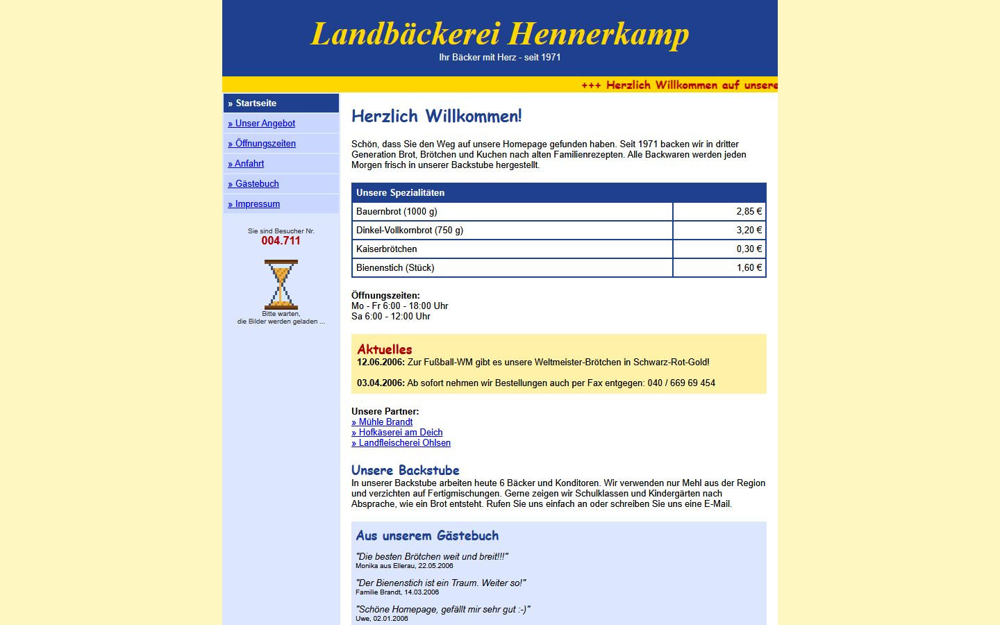

Kluge Chefs wissen, wie ihre Website dasteht.
Wir öffnen Ihre Seite wie ein Kunde auf dem Handy und zeigen Ihnen in Sekunden, was veraltet ist.

- Browser warnt: „Nicht sicher“
- Schrift zu klein fürs Handy
- Besucherzähler wie vor 20 Jahren
- Neueste Meldung: Juni 2006
So sehen Ihre Kunden Ihre Seite auf dem Handy.
Wie könnte Ihre Seite heute aussehen?
Wir bauen aus Ihren bisherigen Inhalten einen kostenlosen Entwurf. Unverbindlich, Sie entscheiden danach.
Was beim Check passiert
- Sie geben Ihre Adresse ein.
Mehr brauchen wir nicht. Keine Anmeldung, keine E-Mail-Adresse.
- Wir öffnen Ihre Seite wie ein Kunde.
In einem echten Browser auf einem simulierten Handy. So sehen wir genau das, was Ihre Kunden sehen.
- Sie bekommen ein klares Ergebnis.
Sieben Prüfpunkte mit Ampel und der geschätzte Technik-Stand Ihrer Seite, in verständlichen Worten.
Aus alt wird neu.
So kann ein Entwurf aussehen: die erfundene Landbäckerei aus dem Beispiel, einmal mit ihrer alten Seite und einmal neu gestaltet. Fahren Sie mit der Maus oder dem Finger über das Bild.


Der Entwurf kostet nichts. Die Entscheidung bleibt bei Ihnen.
Wir bauen aus den Inhalten Ihrer bisherigen Seite einen Entwurf, wie sie heute aussehen könnte. Gefällt er Ihnen, sprechen wir über den Rest.
Jetzt Website prüfen